Shiori 系列（视觉小说）产品使用说明文档
本文档只讲「怎么用」：各组件在哪里启动、界面上的按钮与快捷键分别是做什么的。
版本变化与改动记录不在这里，请见文末的「延伸阅读」。
Shiori 系列组件速览
Shiori 是一套围绕「自研 Web 视觉小说引擎」搭建的完整生态。下面几行说明各组件分别做什么，用来判断你该打开哪一个。
Shiori Engine（引擎核心）游戏的运行内核。画面、剧本、存档都由它负责呈现，是一套纯 HTML / JS 的轻量引擎。开源产品。
Shiori Engine EXE（启动器）把引擎装进独立窗口的宿主程序（C# + WPF + WebView2）。玩家双击它来打开游戏，分辨率、渲染方式、调试窗口等开关都在它这里。开源产品。
Shiori Game Manager（管理器）游戏库管理器。把电脑里的多个游戏集中列在一起，用来启动、排序、校检，也支持启动其他引擎的游戏。闭源产品。
Shiori Signer（签名发布器 / 签发器）开发机上的发布工具，负责生成密钥、加密打包、生成增量补丁包与校检完整性。闭源产品。
Shiori Verify（专属签发器）发布时产出、随游戏一起分发的校检小程序（ShioriVerify.exe）。玩家双击即可校检本游戏，无需安装管理器。体积约 0.2 MB。
Shiori Patch（补丁器）由签发器产出的单文件增量安装程序（ShioriPatch.exe），发给玩家用来更新游戏。
Shiori Editor（可视化编辑器）可视化配置立绘等内容的编辑器，目的是降低上手难度。当前仍是 Beta 版。开源产品。
引擎插件可选装的小扩展，只调用引擎已公开的 API，移除引用即完全卸载。安装与参数说明见教学站「引擎插件」页。
Shiori Engine 引擎核心：怎么玩
启动游戏
双击游戏根目录下的启动器即可进入游戏，启动器内已打包 .NET 运行时，无需另行安装运行库：
- Shiori.exe（标准模式，正常游玩用它）
- Shiori_debug.exe（调试模式，多出 F1 开发者菜单、F2 变量面板、F9 立绘变更预览、F12 开发者工具等，供开发者检查使用）
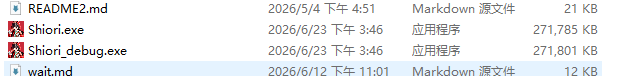
配图说明：游戏根目录的文件列表，Shiori.exe（标准模式）与 Shiori_debug.exe（调试模式）是两个启动器，双击任一个即可进入游戏。
画面底部的按钮栏
进入游戏后，画面底部这条按钮栏就是引擎内置的操作入口，各按钮作用如下：
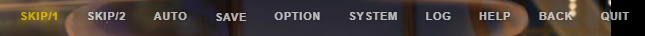
配图说明：游戏画面底部的按钮栏，依次为 SKIP/1、SKIP/2、AUTO、SAVE、OPTION、SYSTEM、LOG、HELP、BACK、QUIT。
键盘与鼠标操作
游戏文件夹里都有什么：引擎根目录下有 engine/（运行核心）、system/（变量与系统服务）、ui/（界面）、config/（配置表）、api/（对外 API）、macro/（宏与 .ks）、plugins/（可选插件）、html/（鉴赏 / 存档 / 流程图等页面）、scenes/（剧本）与 assets/（bgm / cg / se / ui / video等素材），入口为 index.html。
shiori engine/
├─ engine/ · system/ · ui/ · config/ · api/ · macro/ · plugins/
├─ html/ · scenes/ · assets/(bgm|cg|se|ui|video|audio|chars|bg)
└─ index.html · engine_manifest.json · game_info.json
Shiori Engine EXE（启动器）：菜单怎么用
启动器窗口顶部是主菜单栏，与游戏画面有关的开关基本都在这里。Debug 模式下还会多出一个「调试」菜单。
菜单一览
- 文件：返回标题页面（
Home）、打开引擎文件夹、重新加载引擎（Ctrl+F5）、清理无用缓存文件、退出（Alt+F4） - 视图：刷新、分辨率、宽高比（16:9 宽屏 / 4:3 标准）、选择分辨率、最大化窗口（
F10）、独占全屏（F11） - 设置：系统设置、音量设置、AUTO 设置，以及与渲染相关的子菜单（见下一节）
- 帮助：GitHub 仓库、GitHub Pages 教学页面、WakuDemo 应用商店、Shiori Game Manager 下载、存档相关问题、UI 帮助、关于
- 调试（Debug 专属）：开发者工具（
F12）、从头开始、剧本流程图（调试版）、清除所有存档、开启全部鉴赏、加载指定文件、立绘变更（F9）
设置 → 渲染
「设置」菜单里可以切换画面的绘制方式，同一组内单选，各组之间互不影响，部分选项需要重启后生效。
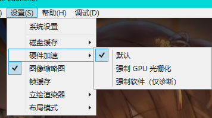
配图说明：「设置 → 渲染」子菜单展开的实拍，图中正展开「硬件加速」（默认 / 强制 GPU 光栅化 / 强制软件）。
- 磁盘缓存：1 MB / 256 MB / 1 GB 三档，用于缓存图片信息。默认且推荐 256 MB。
- 硬件加速：默认 / 强制 GPU 光栅化 / 强制软件（仅诊断）三选一。
- 图像缩略图：独立开关，控制是否生成并使用缩略图。
- 帧缓存：独立开关，控制帧级缓存。
- 立绘渲染器：DOM / 预合成单图 / Canvas 舞台 / 自动 四选一。
- 布局模式：流式 / 等比画布 二选一。
Shiori Game Manager 管理器：怎么用
双击 Shiori manager 文件夹中的 ShioriManager.exe 即可启动。
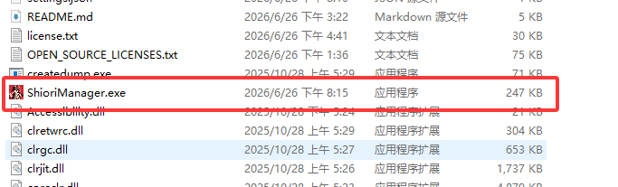
配图说明：管理器所在文件夹，红框圈出的 ShioriManager.exe 就是管理器本体，双击启动。
上方：功能按钮区
- 扫描游戏：二次弹窗确认后，扫描电脑中的所有物理硬盘，寻找可识别的游戏
- 扫描本地 games：只扫描项目内
games\文件夹中的游戏 - 添加游戏：手动添加本引擎的游戏（请勿用它添加其他引擎的游戏）
- 添加其他引擎游戏（+ Other）：手动添加其他引擎的游戏，如 Kirikiri、Ren'Py 等（请勿用它添加本引擎的游戏）
- 检查更新：读取线上版本信息，检查管理器是否有新版本
- 桌面快捷方式：在桌面创建一份管理器的启动快捷方式
- 一键清除游戏：清空列表中的所有游戏（不影响本地物理文件）
- 打开校验器：拉起管理器内置的完整性校验工具（只校检，不生成）
- 文件格式检测：读取文件开头的魔数，确认文件的真实格式（支持专有容器
.sgd的识别） - 语言切换：切换界面文字语言（简体中文 / 繁體中文 / English / 日本語）
中间：游戏列表
- 排序：呼出窗口，进行手动或自动排序
- 拖动游戏：改变排列顺序（可使用鼠标滚轮）
- 右键：置顶 / 取消置顶 / 重命名游戏
- 更新游戏信息：重新读取游戏目录下的
game_info.json
右侧：启动栏
- 启动：快速启动游戏
- 启动调试：以 Debug 模式启动（本引擎游戏专属）
- 使用日语环境打开：用
LEGUI（Locale Emulator）以日语环境打开游戏（非本引擎游戏用） - 校验游戏完整性：对游戏内容做一次完整的签名 / 哈希校检
- [中·自] / [日]：指定该游戏在自动排序时使用中文还是日语的词典
- 打开文件夹：打开游戏所在文件夹
- 移除：把游戏移出列表（不影响本地物理文件）
- 安装 Locale Emulator：在未安装 LEGUI 的机器上快速安装
右下角：其他入口
- JSON 数据测试：月幕 gal API 的数据排序测试页面
- 月幕 API 说明：月幕 gal API 的数据使用声明
- 安装 LEGUI：仅在电脑没有安装
LEGUI时使用，会启动完整的安装向导 - 打开 LEGUI 文件夹：打开
LEGUI所在文件夹，可自行替换文件切换版本 - 开发者注意事项：开发者使用管理器时需要注意的问题
- 玩家使用方法：玩家使用管理器时需要注意的问题
- 版权协议：管理器本体协议（SPDX-License-Identifier: LicenseRef-Shiori-manager）
- 第三方开源协议：管理器所用第三方依赖的开源协议合集
支持哪些引擎
管理器除本引擎的游戏外，也能识别并启动这些引擎的游戏：Kirikiri2 / KirikiriZ、NEKOPACK、Ren'Py、WEBGal、Unity、UE等。
若游戏中填写了网址，管理器可以直接用外部浏览器打开它。这些链接是开发者写在游戏里的（大概率是游戏官网或补丁站），并非 Shiori 官方页面，请自行判断是否访问。
Shiori Signer 签名发布器（签发器）：怎么用
签发器是开发机上的发布工具。管理器中虽然也内置了同名工具，但只保留校检功能；要生成密钥、加密打包或出补丁，请到管理器的 releases 中下载专用的 ShioriSigner.exe。
三个名字别混：
签发器 —— ShioriSigner.exe，开发机使用，负责密钥、签名、加密打包与出补丁。
补丁器 —— ShioriPatch.exe，由签发器产出，是发给玩家的单文件增量安装程序。
专属签发器 —— ShioriVerify.exe，随游戏分发，供玩家双击自校检。
主窗口
签发器主窗口有三个入口按钮：「加密与发布」「生成签名」「校验完整性」，按当前要做的事情点对应的那个。
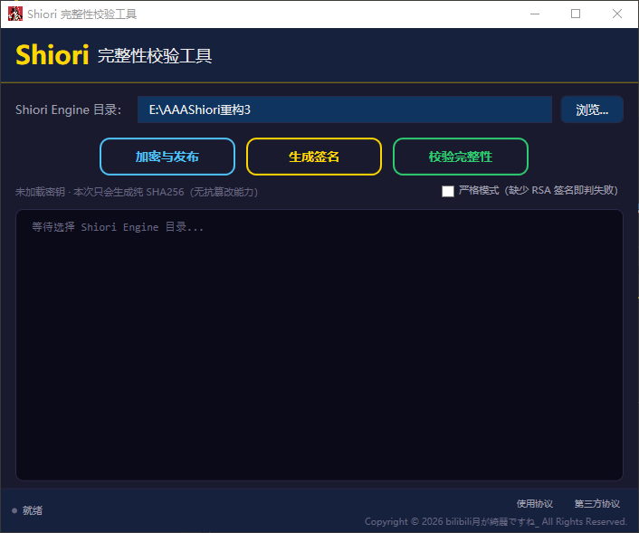
配图说明：签发器主窗口，顶部填入 Shiori Engine 目录，下方是「加密与发布 / 生成签名 / 校验完整性」三个入口按钮，右侧为「严格模式」勾选框。
「加密与发布」窗口
该窗口内置三个页面，顶部页签可随时来回切换。
① 密钥管理
在这里生成或导入密钥：可生成密钥对、显示 / 复制公钥与私钥、导出密钥 txt、导入密钥 txt、清空密钥、把密钥应用到本次会话。生成或导入后会立即显示当前密钥的 Key ID 与位数。
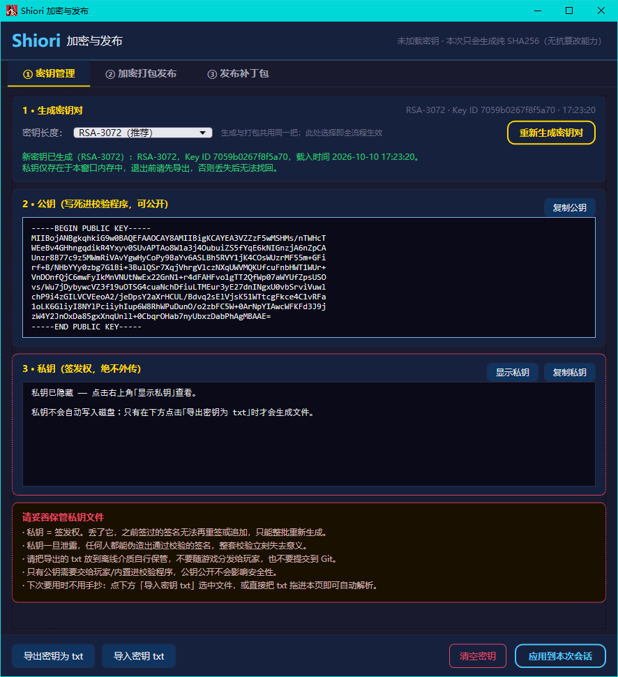
配图说明：「① 密钥管理」页，选择密钥长度后生成或导入密钥，直接显示 Key ID 与公钥、私钥，底部为导出 / 导入 / 清空等操作。
- RSA 位数按下拉框选择执行（2048 / 3072 / 4096，默认 3072）。
- 打包默认使用当前会话的密钥；也可以改为「使用指定 PEM 文件」，这个选择会被记住。
- 「另存为 PEM」可把当前生效的打包密钥导出为
launcher_priv.pem与launcher_pub.pem。 Key ID全程可见：密钥页生成 / 导入后立即显示，打包页常驻显示「本次打包密钥 Key ID」，导出的密钥 txt 与launcher_priv.pem末尾也标注了它，离线保管时也能核对。
② 加密打包发布
选好源目录与输出目录，勾选需要的打包选项，点「开始加密打包发布」即可。页面顶部有可折叠的「发布前置条件与注意事项」。
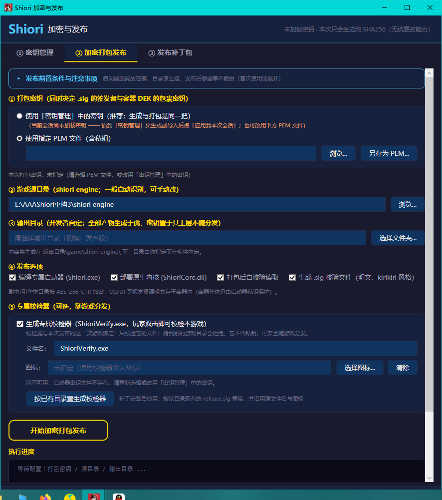
配图说明：「② 加密打包发布」页，依次填写打包密钥、游戏源目录、输出目录与发布选项，底部是「开始加密打包发布」。
- 打包选项：编译专属启动器
Shiori.exe/ 部署原生内核ShioriCore.dll/ 打包后自校验读取 / 生成.sig校验文件。 - 输出为发布根下的内容目录（含
shiori engine、public_key.pem、release.sig与各.sig，以及随游戏分发的ShioriVerify.exe）与developer_keys密钥备份目录。
注意：请勿分发或发布你的密钥（尤其是私钥），也切勿遗失。密钥一旦丢失无法找回，该游戏也将无法再发布补丁式更新。请务必在本地或私有云端多处备份。
③ 发布补丁包
指定被改 / 新增的源目录或散文件，以及已发布的完整游戏内容根，即可产出单个补丁安装程序 ShioriPatch.exe。
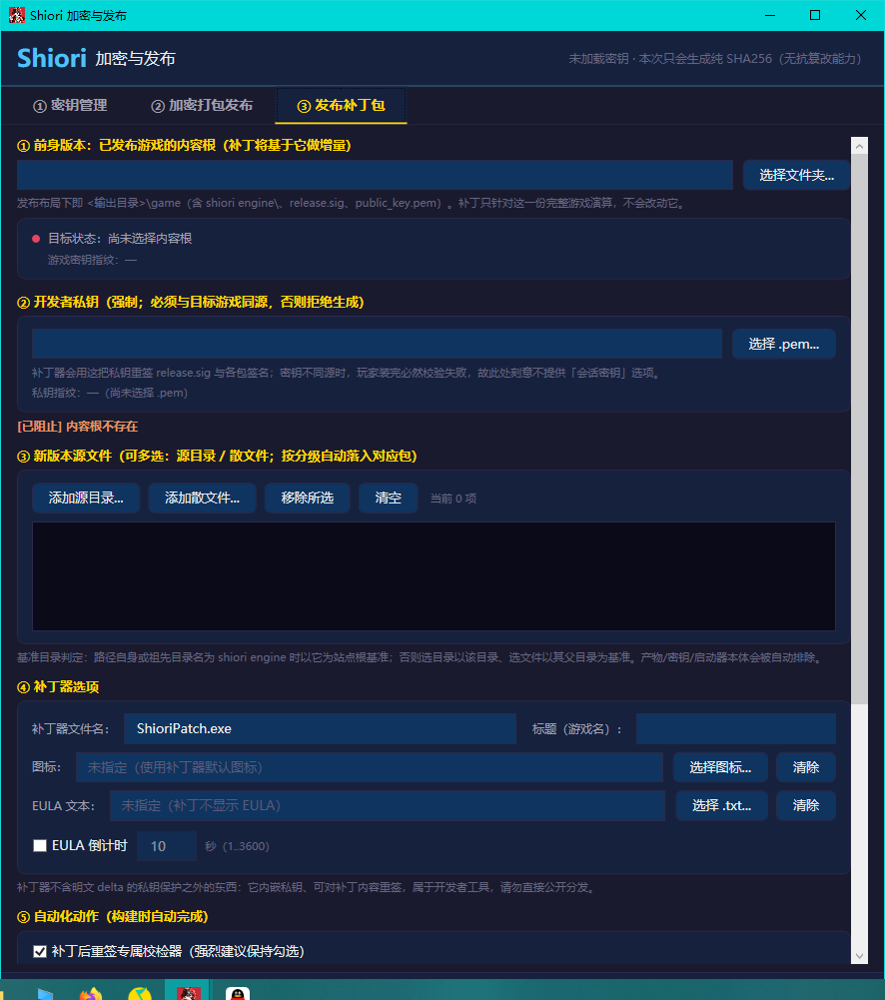
配图说明：「③ 发布补丁包」页，依次填写前身版本、开发者私钥、新版本源文件与补丁器选项，产出单个 ShioriPatch.exe。
- 你只需给出被改动的文件，程序会自动识别目标当前的状态（加密 / 明文、是否带密钥），把它们归入对应的包或目录。
- 加密目标只改动受影响的条目，未变动的密文保持原样；明文目标只落地被改 / 新增的文件。
- 签名按补丁后的完整文件集重新签发，不是只覆盖改动的那几个文件。
- 加密目标需要你提供与该游戏公钥指纹一致的私钥
.pem，指纹不符会拒绝生成。 - 安装前会核对当前游戏是不是该补丁对应的上一个版本，不符时只提示，可选择「仍要安装」。
- 补丁自身带完整性自检，并对内置载荷验签；安装时会一并替换配套的
ShioriVerify.exe，因此只需分发这一个文件。
校检完整性
命令行方式
- 命令：
ShioriSigner.exe --verify --site <目录> [--pub <公钥.pem>]。 - 结束后输出
VERIFY_EXITCODE（0 为通过，2 为存在失败），方便脚本直接调用。 - 校检会自动匹配发行包随附的
public_key.pem；日志中同时列出「签名记录 Key ID」与「当前公钥 Key ID」，是否配对一眼可辨。
专属签发器（玩家侧）
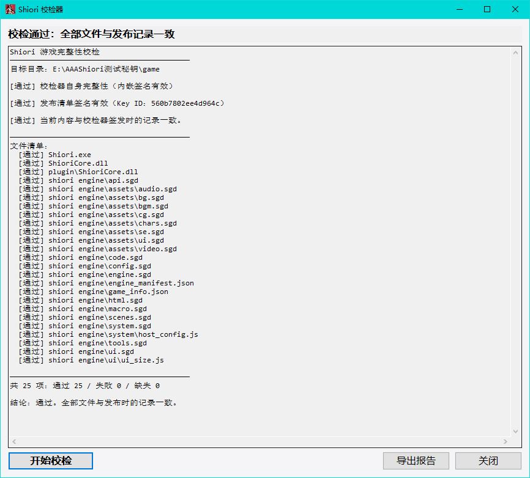
配图说明：玩家双击 ShioriVerify.exe 后的校检窗口，抬头「校检通过：全部文件与发布记录一致」，末尾统计「共 25 项：通过 25 / 失败 0 / 缺失 0」。
- 打开窗口后点「开始校检」才执行，过程逐条输出，大文件也能看到进度。
- 与发布的那一款游戏绑定：拷到别的游戏目录会被拒绝，替换同目录的公钥也无法蒙混通过。
- 只读、不联网、不提权，除你主动「导出报告」外不写任何文件。
- 签发时的记录与当前内容不一致时只给中性提示（常见于已装补丁或版本更新），不影响校检结论。
- 支持静默模式
/silent，返回退出码（0 通过 / 2 存在失败 / 3 自身被篡改 / 4 非本游戏）。
校检结果示例
下图以管理器内置的「Shiori 完整性校验工具」为例（此处仍使用旧版截图）：指定游戏目录后点击校检，会逐条比对所有关键文件，并列出未注册文件。下面是文件都原封不动时的结果。
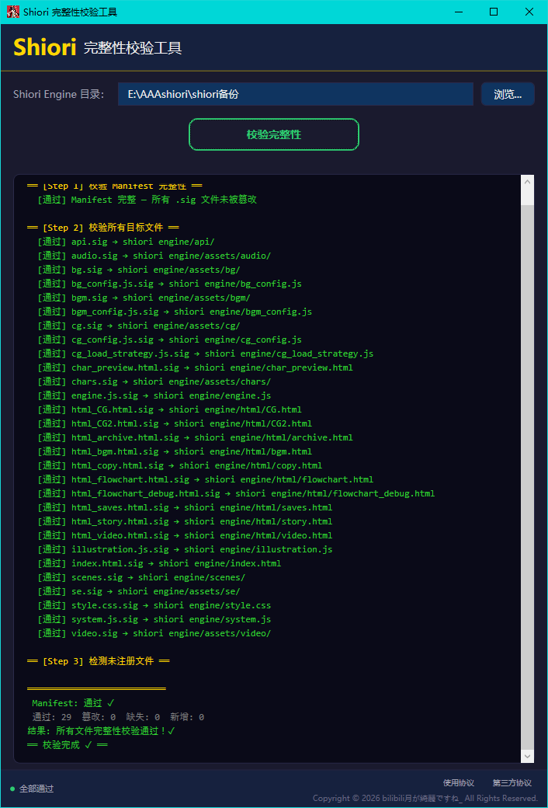
配图说明：校验全部通过，逐条为绿字 [通过]，末尾统计 通过：29 整改：0 缺失：0 新增：0。
为了看清「异常」长什么样，我们故意把引擎核心文件改坏一处 —— 在红框位置随手添了一个用不到的函数：
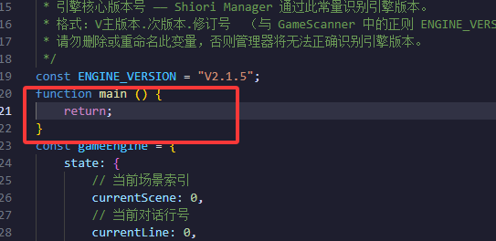
配图说明：修改 engine.js 中红框部分，示例为随意添加一个无用的函数。
此时我们再进行一次校检：
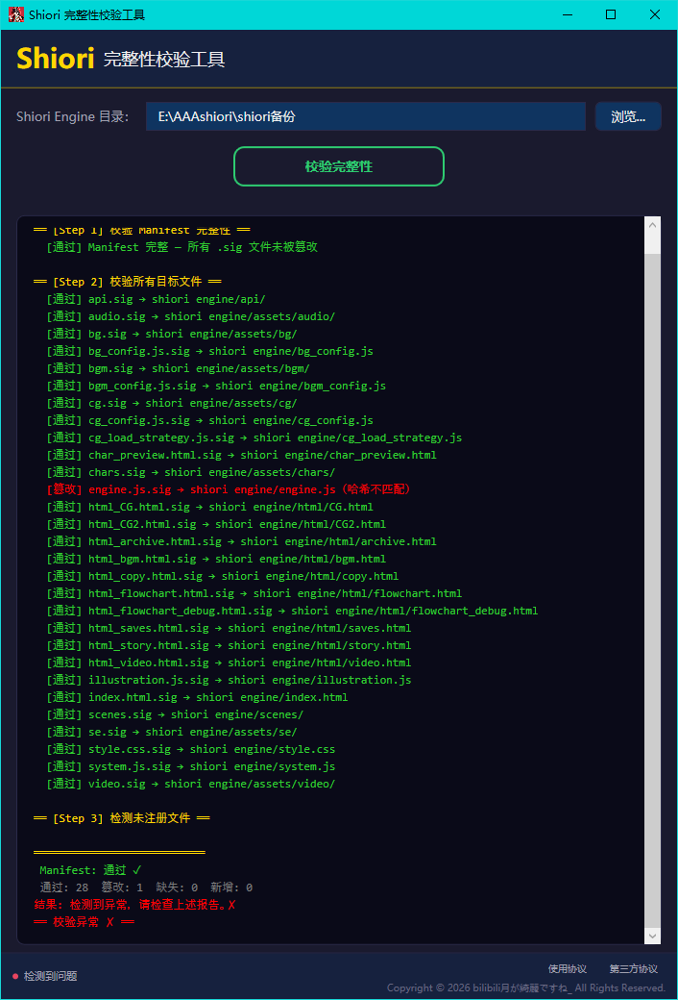
配图说明：被改动的 engine.js 已正确返回异常，该行标红并注明「哈希不匹配」，末尾统计 通过：28 整改：1 缺失：0 新增：0。
插件怎么装
插件遵循「零侵入」原则：只调用引擎已公开的 API 与标准 DOM，移除引用即完全卸载，不产生硬依赖。每个插件的完整说明与「一键安装提示词」见「引擎插件」页。
- 每个插件目录下的
安装说明.md都写明了：插件作用、文件放哪里、要改哪个宿主文件、参数与开关、如何卸载，以及可以直接复制给 AI 的一键安装提示词。 - 引擎内部插件通常只需把
.js放进对应目录，再在engine_manifest.json的official列表中引用；宿主会自动把它注入剧本页、index.html与html/CG.html。 - 若插件还要作用于注入范围之外的页面（如
html/bgm.html），需在该页</body>之前手写一行引用。 - 外部 API 插件还需要放置宿主侧的桥接文件（如
BiliLoginBridge.cs放在 Shiori 启动器工程根目录）。
Shiori Editor 可视化编辑器（Beta）
可视化配置立绘等内容的编辑器，用来降低使用 Shiori 引擎的上手难度，并与生态内其他工具打通了一体化沟通与启动。
编辑器目前仍是 Beta 版（V0.1.1），尚未适配新版引擎，待新功能稳定后再适配。
出于版权原因，编辑器内的部分立绘素材在公开截图中被暂时删除，实际使用时可以正常加载你自己的素材。
延伸阅读
本文档只讲使用。各组件的版本变化、改动记录与发展过程，请看下列页面：
- 重要联合更新日志
- 引擎更新日志 · 启动器更新日志 · 专用补丁系统更新日志
- 管理器更新日志 · 可视化编辑器更新日志
- 语法与指令：基础脚本语法与指令规范 · 变量与运算符 · KS 宏与 DSL 语法指南 · [wait time] 标签使用指南 · 引擎对外 API 参考
- 资源与演出：资源管理与配置 · 背景转场教程 · 立绘控制教程 · 高级立绘系统详细教学
- 系统机制：好感度系统详解 · 存档系统详细说明 · 品牌图标 · 下载中心 · 开发者手记 · 引擎插件